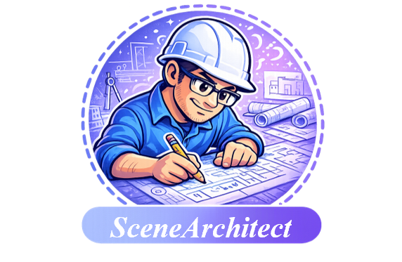
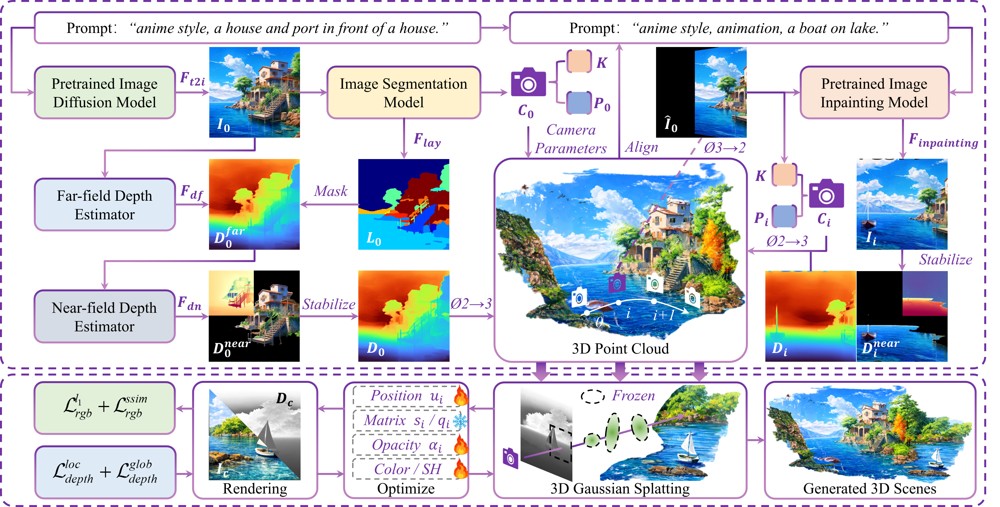
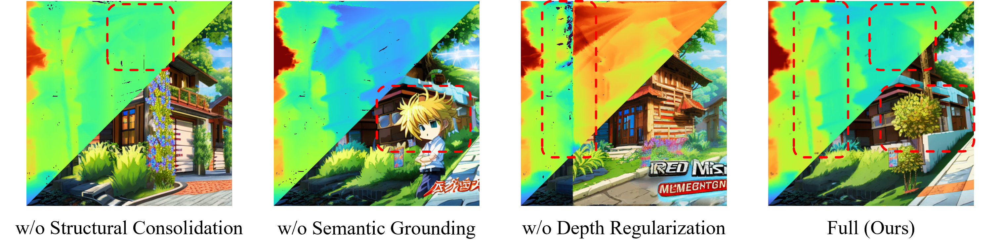
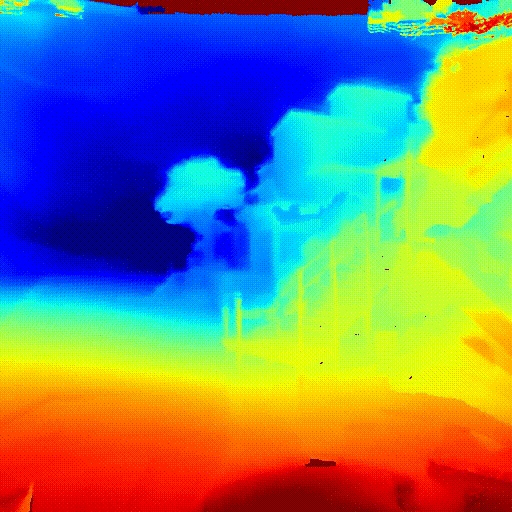
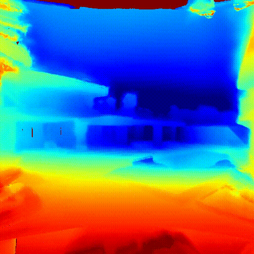
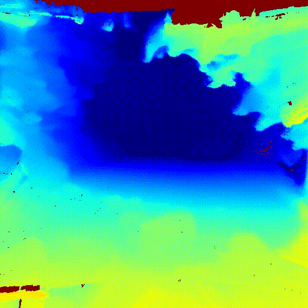
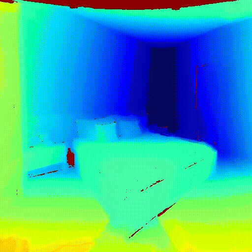
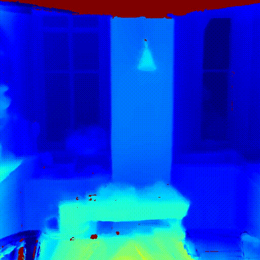

SceneArchitectWith the widespread adoption of VR devices and immersive content, demands for 3D virtual scene generation are rapidly increasing. An expected virtual scene should satisfy 1) structural consistency for free-viewpoint exploration, and 2) semantic fidelity to the input description. However, under progressive view expansion, current pipelines are prone to error accumulation: small depth or alignment errors can rapidly amplify into geometric drift, while locally synthesized views may gradually deviate from the intended semantics, resulting in inconsistent layouts and illogical content. To address these limitations, we propose SceneArchitect, which alternates two core steps: Structural Consolidation, leveraging a foreground-centric reconstruction strategy together with cross-view depth consistency to preserve geometric coherence during scene growth, and Semantic Grounding, maintaining a global reference view for completion-region localization and scene-level context preservation, followed by context-aware prompt refinement to keep local synthesis controllable without drifting from the overall semantics. We further pioneer a depth-aware regularization for Gaussian-based scene optimization to promote coherent spatial reconstruction while retaining fine-grained appearance. Extensive experiments demonstrate that SceneArchitect mitigates structural drift and semantic inconsistency, improving geometric coherence and text--scene alignment over representative baselines for progressive 3D scene generation.


Fig. Visual comparisons under viewpoint changes.
Table. We report text–scene alignment and perceptual quality metrics. Bold indicates the best result.
| Method | Aesthetic ↑ | CLIP-Score ↑ | CLIP-IQA ↑ | BRISQUE ↓ | NIQE ↓ | ||
|---|---|---|---|---|---|---|---|
| Quality | Colorful | Sharp | |||||
| Text2Room | 4.415 | 25.556 | 0.465 | 0.104 | 0.332 | 42.552 | 3.732 |
| LucidDreamer | 4.923 | 30.443 | 0.619 | 0.730 | 0.199 | 38.301 | 5.834 |
| BloomScene | 5.088 | 31.810 | 0.743 | 0.813 | 0.250 | 23.966 | 3.303 |
| DreamScene360 | 4.858 | 28.602 | 0.500 | 0.495 | 0.158 | 29.727 | 5.091 |
| LayerPano3D | 4.994 | 31.383 | 0.795 | 0.690 | 0.183 | 24.260 | 3.212 |
| SceneArchitect (Ours) | 5.136 | 33.514 | 0.803 | 0.845 | 0.258 | 22.696 | 3.074 |
Comparison between the baseline and our method. Our results preserve global structure and improve local details under large viewpoint changes.

Fig.Visual comparisons under viewpoint changes.
Table. Ablation results of different components. Bold indicates the best result.
| Method | Aesthetic ↑ | CLIP-Score ↑ | CLIP-IQA ↑ | BRISQUE ↓ | NIQE ↓ | ||
|---|---|---|---|---|---|---|---|
| Quality | Colorful | Sharp | |||||
| w/o Structural Consolidation | 5.433 | 34.145 | 0.898 | 0.981 | 0.747 | 23.460 | 3.109 |
| w/o Semantic Grounding | 5.463 | 34.353 | 0.881 | 0.908 | 0.678 | 23.790 | 3.450 |
| w/o Depth Regularization | 5.313 | 30.724 | 0.784 | 0.951 | 0.627 | 25.491 | 3.287 |
| Full (Ours) | 5.593 | 34.978 | 0.910 | 0.983 | 0.807 | 22.696 | 3.002 |
Ablation study of SceneArchitect. We compare the full model with variants that remove key components: without Structural Consolidation, without Semantic Grounding, and without Depth-Regularized Gaussian Refinement.
Outdoor Scene







Indoor Scene





© SceneArchitect Project Page. Xidian University Prof. Bin Song's Team. All rights reserved.